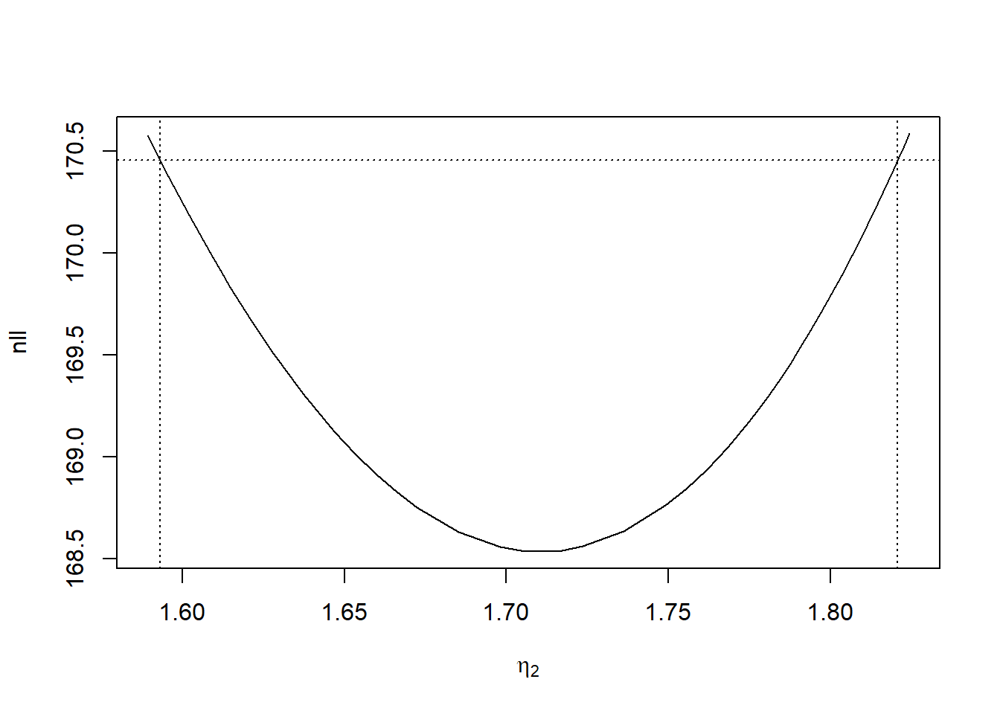

5 Confidence intervals
From the parameters’ ML estimates, we generate new data and re-estimate the parameters 1000 times.
From that list of new estimates we can get the 2.5th and 97.5th percentiles and get 95% confidence intervals for the parameters.
We show below how to derive confidence intervals using TMB, a likelihood profile based method, and parametric bootstrap, based on the 2 state Poisson HMM estimates.
For all three methods, we require a model, so we generate a 2-state Poisson HMM based on the TYT dataset
# Load TMB and optimization packages
library(TMB)
# Run the C++ file containing the TMB code
TMB::compile("code/poi_hmm.cpp")
## [1] 0
# Load it
dyn.load(dynlib("code/poi_hmm"))
# Load the parameter transformation function
source("functions/utils.R")
load("data/tinnitus.RData")
# Model with 2 states
m <- 2
TMB_data <- list(x = tinn_data, m = m)
# Generate initial set of parameters for optimization
lambda <- c(1, 3)
gamma <- matrix(c(0.8, 0.2,
0.2, 0.8), byrow = TRUE, nrow = m)
# Turn them into working parameters
parameters <- pois.HMM.pn2pw(m, lambda, gamma)
obj_tmb <- MakeADFun(TMB_data, parameters,
DLL = "poi_hmm", silent = TRUE)
# The negative log-likelihood is accessed by the objective
# attribute of the optimized object
mod_tmb <- nlminb(start = obj_tmb$par, objective = obj_tmb$fn,
gradient = obj_tmb$gr, hessian = obj_tmb$he)
mod_tmb$objective
## [1] 168.53615.1 Wald-type confidence
intervals based on the Hessian
Now that we have a model estimated via TMB, we can derive Wald-type (Wald 1943) confidence intervals.
For example, the \((1 - \alpha) \%\) CI for \(\lambda_1\) is given by \(\lambda_1 \pm z_{1-\alpha/2} * \sigma_{\lambda_1}\) where \(z_{x}\) is the \(x\)-percentile of the standard normal distribution, and \(\sigma_{\lambda_1}\) is the standard error of \(\lambda_1\) obtained via the delta method.
First, we require the standard errors. We can retrieve them from the MakeADFun object.
The standard errors of the working parameters tlambda and tgamma can be retrieved without needing to add ADREPORT in the C++ file.
However, it is usually more interesting to access the standard errors of the natural parameters lambda, gamma and delta. This requires adding a few lines to the C++ file to produce these standard errors, as detailed in [Getting started with a linear regression].
Be careful: adrep lists gamma column-wise.
adrep <- summary(sdreport(obj_tmb), "report")
adrep
## Estimate Std. Error
## lambda 1.63641100 0.27758296
## lambda 5.53309576 0.31876147
## gamma 0.94980209 0.04374676
## gamma 0.02592204 0.02088688
## gamma 0.05019791 0.04374676
## gamma 0.97407796 0.02088688
## delta 0.34054200 0.23056437
## delta 0.65945800 0.23056437Standard errors for \(\hat{{\boldsymbol\lambda}}\):
rows <- rownames(adrep) == "lambda"
lambda <- adrep[rows, "Estimate"]
lambda_std_error <- adrep[rows, "Std. Error"]
lambda
## lambda lambda
## 1.636411 5.533096
lambda_std_error
## lambda lambda
## 0.2775830 0.3187615Standard errors for \(\hat{{\boldsymbol\Gamma}}\)
rows <- rownames(adrep) == "gamma"
gamma <- adrep[rows, "Estimate"]
gamma <- matrix(gamma, ncol = m) # Convert to matrix
gamma_std_error <- adrep[rows, "Std. Error"]
gamma_std_error <- matrix(gamma_std_error, nrow = m, ncol = m)
gamma
## [,1] [,2]
## [1,] 0.94980209 0.05019791
## [2,] 0.02592204 0.97407796
gamma_std_error
## [,1] [,2]
## [1,] 0.04374676 0.04374676
## [2,] 0.02088688 0.02088688Standard errors for \(\hat{{\boldsymbol\delta}}\):
rows <- rownames(adrep) == "delta"
delta <- adrep[rows, "Estimate"]
delta_std_error <- adrep[rows, "Std. Error"]
delta
## delta delta
## 0.340542 0.659458
delta_std_error
## delta delta
## 0.2305644 0.23056445.2 Likelihood profile based
confidence intervals
Our nll function is parametrized in terms of and optimized with respect to the working parameters. In practice, this aspect is easy to deal with. Once a profile CI for the working parameter (here \(\eta_2\)) has been obtained following the procedure above, the corresponding CI for the natural parameter \(\lambda_2\) results directly from transforming the upper and lower boundary of the CI for \(\eta_2\) by the one-to-one transformation \(\lambda_2 = \exp(\eta_2)\). For further details on the invariance of likelihood-based CIs to parameter transformations, we refer to Meeker and Escobar (1995).
Profiling \(\eta_2\) (the working parameter corresponding to \(\lambda_2\)) with TMB can be done with
profile <- tmbprofile(obj = obj_tmb,
name = 2,
trace = FALSE)
head(profile)
## tlambda value
## 67 1.589247 170.5801
## 66 1.592447 170.4783
## 65 1.595647 170.3790
## 64 1.598847 170.2821
## 63 1.602047 170.1877
## 62 1.605247 170.0957A plot allows for a visual representation of the profile
# par(mgp = c(2, 0.5, 0), mar = c(3, 3, 2.5, 1),
# cex.lab = 1.5)
plot(profile, level = 0.95,
xlab = expression(eta[2]),
ylab = "nll")
Then we can infer \(\eta_2\)’s confidence interval, and hence \(\lambda_2\)’s confidence interval
confint(profile)
## lower upper
## tlambda 1.593141 1.820641
exp(confint(profile))
## lower upper
## tlambda 4.919178 6.175815Further, profiling the TPM is done similarly. However, since individual natural TPM parameters cannot be deduced from single working parameters, we need to profile the entire working TPM then transform it back to a natural TPM.
profile3 <- tmbprofile(obj = obj_tmb,
name = 3,
trace = FALSE)
profile4 <- tmbprofile(obj = obj_tmb,
name = 4,
trace = FALSE)
# Obtain confidence intervals for working parameters
tgamma_3_confint <- confint(profile3)
tgamma_4_confint <- confint(profile4)
# Group lower bounds and upper bounds
lower <- c(tgamma_3_confint[1], tgamma_4_confint[1])
upper <- c(tgamma_3_confint[2], tgamma_4_confint[2])
# Infer bounds on natural parameters
gamma_1 <- gamma.w2n(m, lower)
gamma_2 <- gamma.w2n(m, upper)
# Display unsorted lower and upper bounds
gamma_1
## [,1] [,2]
## [1,] 0.99800287 0.001997133
## [2,] 0.00154545 0.998454550
gamma_2
## [,1] [,2]
## [1,] 0.81653046 0.1834695
## [2,] 0.08801416 0.9119858
# Sorted confidence interval for gamma_11
sort(c(gamma_1[1, 1], gamma_2[1, 1]))
## [1] 0.8165305 0.9980029It is noteworthy that gamma_1 is not necessarily lower than gamma_2, because only the working confidence intervals are automatically sorted.
Also note that linear combinations of parameters can be profiled by passing the lincomb argument.
More details are available by executing ??TMB::tmbprofile to access the tmbprofile’s help.
The name parameter should be the index of a parameter to profile.
While the function’s help mentions it can be a parameter’s name, the first two parameters are both named tlambda as can be seen here
mod_tmb$par
## tlambda tlambda tgamma tgamma
## 0.4925054 1.7107475 -3.6263979 -2.94028035.3 Bootstrap-based
confidence intervals
5.3.1 Generating data
In order to perform a parametric bootstrap, we need to be able to generate data from a set of parameters.
For readability and code maintenance, it is conventional to store procedures that will be used more than once into functions.
The data-generating function is defined in Zucchini, MacDonald, and Langrock (2016, secs. A.1.5 p.333).
pois.HMM.generate.sample <- function(ns,mod) {
mvect <- 1:mod$m
state <- numeric(ns)
state[1] <- sample(mvect, 1, prob = mod$delta)
for (i in 2:ns) {
state[i] <- sample(mvect, 1, prob = mod$gamma[state[i - 1], ])
}
x <- rpois(ns, lambda = mod$lambda[state])
return(x)
}Further, one can retrieve the state sequence used to generate the data by performing an adjustment:
# Generate a random sample from a HMM
pois.HMM.generate.sample <- function(ns, mod) {
mvect <- 1:mod$m
state <- numeric(ns)
state[1] <- sample(mvect, 1, prob = mod$delta)
for (i in 2:ns) {
state[i] <- sample(mvect, 1, prob = mod$gamma[state[i - 1], ])
}
x <- rpois(ns, lambda = mod$lambda[state])
return(list(data = x, state = state))
}The results are returned in a list to simplify usage, as the intuitive way (c(x, state)) would append the state sequence to the data.
In practice, HMMs sometimes cannot be estimated on generated samples.
To deal with this, we can generate a new sample as long as HMMs cannot be estimated on it, with the help of this more resilient function which can easily be adapted to different needs.
Natural parameter estimates are returned for convenience.
The argument test_marqLevAlg decides if convergence of marqLevAlg is required.
The argument std_error decides if standard errors are returned along with TMB’s estimates.
This function relies on the custom function TMB.estimate which is a wrapper of nlminb made for Poisson HMM estimation via TMB.
# Generate a random sample from a HMM
pois.HMM.generate.estimable.sample <- function(ns,
mod,
testing_params,
params_names = PARAMS_NAMES,
std_error = FALSE) {
if(anyNA(c(ns, mod, testing_params))) {
stop("Some parameters are missing in pois.HMM.generate.estimable.sample")
}
# Count occurrences for each error
failure <- c("state_number" = 0,
"TMB_null" = 0,
"TMB_converge" = 0,
"TMB_G_null" = 0,
"TMB_G_converge" = 0,
"TMB_H_null" = 0,
"TMB_H_converge" = 0,
"TMG_GH_null" = 0,
"TMG_GH_converge" = 0,
"NA_value" = 0)
m <- mod$m
# Loop as long as there is an issue with nlminb
repeat {
mod_temp <- NULL
#simulate the data
new_data <- pois.HMM.generate.sample(ns = ns,
mod = mod)
# If the number of states generated is different from m, discard the data
if (length(unique(new_data$state)) != m) {
failure["state_number"] <- failure["state_number"] + 1
next
}
TMB_new_data <- list(x = new_data$data, m = m)
testing_w_params <- pois.HMM.pn2pw(m = m,
lambda = testing_params$lambda,
gamma = testing_params$gamma,
delta = testing_params$delta)
# Test TMB
suppressWarnings(mod_temp <- TMB.estimate(TMB_data = TMB_new_data,
parameters = testing_w_params,
std_error = std_error))
# If nlminb doesn't reach any result, discard the data
if (is.null(mod_temp)) {
failure["TMB_null"] <- failure["TMB_null"] + 1
next
}
# If nlminb doesn't converge successfully, discard the data
if (mod_temp$convergence != 0) {
failure["TMB_converge"] <- failure["TMB_converge"] + 1
next
}
# Test TMB_G
suppressWarnings(mod_temp <- TMB.estimate(TMB_data = TMB_new_data,
parameters = testing_w_params,
gradient = TRUE,
std_error = std_error))
# If nlminb doesn't reach any result, discard the data
if (is.null(mod_temp)) {
failure["TMB_G_null"] <- failure["TMB_G_null"] + 1
next
}
# If nlminb doesn't converge successfully, discard the data
if (mod_temp$convergence != 0) {
failure["TMB_G_converge"] <- failure["TMB_G_converge"] + 1
next
}
# Test TMB_H
suppressWarnings(mod_temp <- TMB.estimate(TMB_data = TMB_new_data,
parameters = testing_w_params,
hessian = TRUE,
std_error = std_error))
# If nlminb doesn't reach any result, discard the data
if (is.null(mod_temp)) {
failure["TMB_H_null"] <- failure["TMB_H_null"] + 1
next
}
# If nlminb doesn't converge successfully, discard the data
if (mod_temp$convergence != 0) {
failure["TMB_H_converge"] <- failure["TMB_H_converge"] + 1
next
}
# Test TMB_GH
suppressWarnings(mod_temp <- TMB.estimate(TMB_data = TMB_new_data,
parameters = testing_w_params,
gradient = TRUE,
hessian = TRUE,
std_error = std_error))
# If nlminb doesn't reach any result, discard the data
if (is.null(mod_temp)) {
failure["TMB_GH_null"] <- failure["TMB_GH_null"] + 1
next
}
# If nlminb doesn't converge successfully, discard the data
if (mod_temp$convergence != 0) {
failure["TMB_GH_converge"] <- failure["TMB_GH_converge"] + 1
next
}
natural_parameters <- list(m = m,
lambda = mod_temp$lambda,
gamma = mod_temp$gamma,
delta = mod_temp$delta,
lambda_std_error = mod_temp$lambda_std_error,
gamma_std_error = mod_temp$gamma_std_error,
delta_std_error = mod_temp$delta_std_error)
# If some parameters are NA for some reason, discard the data
if (anyNA(natural_parameters[params_names], recursive = TRUE)) {
failure["NA_value"] <- failure["NA_value"] + 1
next
}
# If everything went well, end the "repeat" loop
break
}
return(list(data = new_data$data,
states = new_data$state,
natural_parameters = natural_parameters,
mod = mod_temp,
failure = failure))
}5.3.2 Bootstrap
set.seed(123)
library(TMB)
TMB::compile("code/poi_hmm.cpp")
dyn.load(dynlib("code/poi_hmm"))
source("functions/utils.R")
m <- 2
load("data/tinnitus.RData")
TMB_data <- list(x = tinn_data, m = m)
# Initial set of parameters
lambda_init <- c(1, 3)
gamma_init <- matrix(c(0.8, 0.2,
0.2, 0.8), byrow = TRUE, nrow = m)
# Turn them into working parameters
parameters <- pois.HMM.pn2pw(m, lambda_init, gamma_init)
# Build the TMB object
obj_tmb <- MakeADFun(TMB_data, parameters,
DLL = "poi_hmm", silent = TRUE)
# Optimize
mod_tmb <- nlminb(start = obj_tmb$par,
objective = obj_tmb$fn,
gradient = obj_tmb$gr,
hessian = obj_tmb$he)
# Bootstrap procedure
bootstrap_estimates <- data.frame()
DATA_SIZE <- length(tinn_data)
# Set how many parametric bootstrap samples we create
BOOTSTRAP_SAMPLES <- 10
# MLE
ML_working_estimates <- obj_tmb$par
ML_natural_estimates <- obj_tmb$report(ML_working_estimates)
lambda <- ML_natural_estimates$lambda
gamma <- ML_natural_estimates$gamma
delta <- ML_natural_estimates$delta
PARAMS_NAMES <- c("lambda", "gamma", "delta")
for (idx_sample in 1:BOOTSTRAP_SAMPLES) {
# Generate a sample based on mod, and ensure a HMM can be estimated on it
# with testing_params as initial parameters
temp <- pois.HMM.generate.estimable.sample(ns = DATA_SIZE,
mod = list(m = m,
lambda = lambda,
gamma = gamma),
testing_params = list(m = m,
lambda = lambda_init,
gamma = gamma_init))$natural_parameters
# The values from gamma are taken columnwise
natural_parameters <- unlist(temp[PARAMS_NAMES])
len_par <- length(natural_parameters)
bootstrap_estimates[idx_sample, 1:len_par] <- natural_parameters
}
# Lower and upper (2.5% and 97.5%) bounds
q <- apply(bootstrap_estimates, 2, function(par_estimate) {
quantile(par_estimate, probs = c(0.025, 0.975))
})
PARAMS_NAMES <- paste0(rep("lambda", m), 1:m)
# Get row and column indices for gamma instead of the default
# columnwise index: the default indices are 1:m for the 1st column,
# then (m + 1):(2 * m) for the 2nd, etc...
for (gamma_idx in 1:m ^ 2) {
row <- (gamma_idx - 1) %% m + 1
col <- (gamma_idx - 1) %/% m + 1
row_col_idx <- c(row, col)
PARAMS_NAMES <- c(PARAMS_NAMES,
paste0("gamma",
paste0(row_col_idx, collapse = "")))
}
PARAMS_NAMES <- c(PARAMS_NAMES,
paste0(rep("delta", m), 1:m))
bootstrap_CI <- data.frame("Parameter" = PARAMS_NAMES,
"Estimate" = c(lambda, gamma, delta),
"Lower bound" = q[1, ],
"Upper bound" = q[2, ])
print(bootstrap_CI, row.names = FALSE)It should be noted that some bootstrap estimates can be very large or very small. One possible reason is that the randomly generated bootstrap sample might contain long chains of the same values, thus causing some probabilities in the TPM to be near the boundary 0 or 1. However, a large number of bootstrap samples lowers that risk since we retrieve a 95% CI.
It is important for the bootstrap procedure to take into account the fact that estimates may not necessarily all be in the same order. For example, the first bootstrap may evaluate \((\lambda_1, \lambda_2) = (1.1, 3.1)\) while the second may evaluate to \((\lambda_1, \lambda_2) = (3.11, 1.11)\). Since we are looking to aggregate these estimates in order to derive CI through their 95% quantiles, it is necessary to impose an order on these estimates, to avoid grouping some \(\lambda_1\) with some \(\lambda_2\).
The first that comes to mind is the ascending order. To ensure that \(\hat{{\boldsymbol\lambda}}\) are kept in ascending order, we refer to our Section Label Switching for a solution.